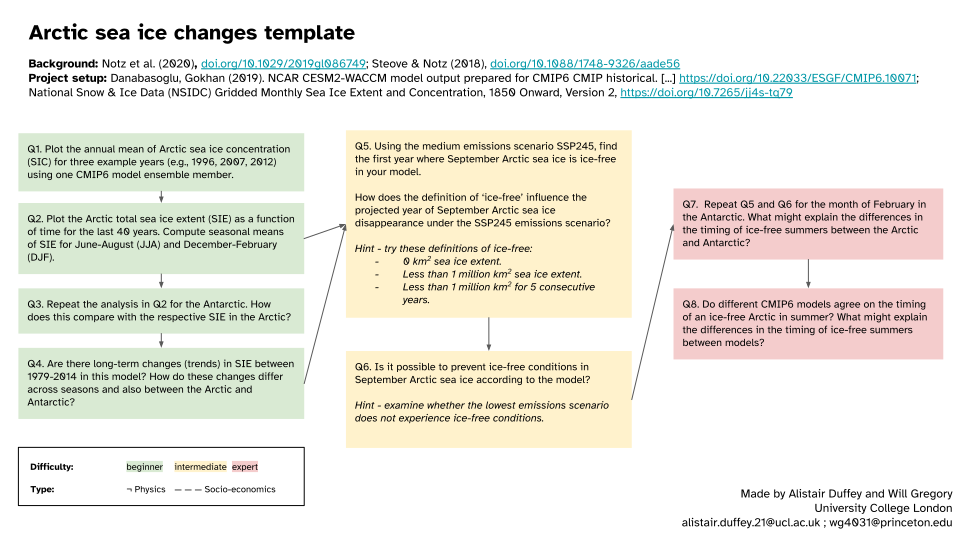

Arctic Sea Ice Change#
Content creators: Alistair Duffey, Will Gregory, Michel Tsamados
Content reviewers: Paul Heubel, Laura Paccini, Jenna Pearson, Ohad Zivan
Content editors: Paul Heubel
Production editors: Paul Heubel, Konstantine Tsafatinos
Our 2024 Sponsors: CMIP, NFDI4Earth
# @title Project Background
from ipywidgets import widgets
from IPython.display import YouTubeVideo
from IPython.display import IFrame
from IPython.display import display
class PlayVideo(IFrame):
def __init__(self, id, source, page=1, width=400, height=300, **kwargs):
self.id = id
if source == 'Bilibili':
src = f'https://player.bilibili.com/player.html?bvid={id}&page={page}'
elif source == 'Osf':
src = f'https://mfr.ca-1.osf.io/render?url=https://osf.io/download/{id}/?direct%26mode=render'
super(PlayVideo, self).__init__(src, width, height, **kwargs)
def display_videos(video_ids, W=400, H=300, fs=1):
tab_contents = []
for i, video_id in enumerate(video_ids):
out = widgets.Output()
with out:
if video_ids[i][0] == 'Youtube':
video = YouTubeVideo(id=video_ids[i][1], width=W,
height=H, fs=fs, rel=0)
print(f'Video available at https://youtube.com/watch?v={video.id}')
else:
video = PlayVideo(id=video_ids[i][1], source=video_ids[i][0], width=W,
height=H, fs=fs, autoplay=False)
if video_ids[i][0] == 'Bilibili':
print(f'Video available at https://www.bilibili.com/video/{video.id}')
elif video_ids[i][0] == 'Osf':
print(f'Video available at https://osf.io/{video.id}')
display(video)
tab_contents.append(out)
return tab_contents
video_ids = [('Youtube', 'gt6o3lqu5zA'), ('Bilibili', 'BV12pGDeVEBw'), ('Osf', '<video_id_3>')]
tab_contents = display_videos(video_ids, W=854, H=480)
tabs = widgets.Tab()
tabs.children = tab_contents
for i in range(len(tab_contents)):
tabs.set_title(i, video_ids[i][0])
display(tabs)
# @title Slides
# @markdown These are the slides for the video introduction to the project
from IPython.display import IFrame
link_id = "y6em2"
print(f"If you want to download the slides: https://osf.io/download/{link_id}/")
IFrame(src=f"https://mfr.ca-1.osf.io/render?url=https://osf.io/{link_id}/?direct%26mode=render%26action=download%26mode=render", width=854, height=480)
If you want to download the slides: https://osf.io/download/y6em2/
In this project, you will be given the opportunity to explore data from climate models to examine the modeled change in sea ice coverage over time.
The project aims to:
Download, process, and plot data showing modeled sea ice coverage over the historical period within a CMIP6 model climate.
Calculate the total sea ice extent and assess its rate of decline over the recent historical period, and project it into the future under a middle-of-the-road emissions scenario.
Assess the dependence of future projections on emissions scenario, e.g. to assess whether any emissions scenario is sufficient to keep late-summer sea ice in the Arctic.
Examine the spatial and seasonal variation of sea ice and how this changes during its decline with warming.
We also include a dataset of satellite observations, in case you would like to check the realism of the model’s representation of sea ice in the recent historical period.
Project Template#
Data Exploration Notebook#
Project Setup#
# google colab installs
# !pip install --quiet cartopy xmip intake-esm
# Imports
import numpy as np
import matplotlib.pyplot as plt
import xarray as xr
import dask
import cartopy.crs as ccrs
import cartopy.feature as cfeature
from xmip.preprocessing import combined_preprocessing
from xmip.utils import google_cmip_col
from xmip.postprocessing import match_metrics
/opt/hostedtoolcache/Python/3.9.18/x64/lib/python3.9/site-packages/esmpy/interface/loadESMF_helpers.py:45: VersionWarning: You are using development versions of ESMF and ESMPy; we cannot verify if these versions are compatible
warnings.warn("You are using development versions of ESMF and ESMPy; "
# @title Figure settings
#import ipywidgets as widgets # interactive display
%config InlineBackend.figure_format = 'retina'
plt.style.use("https://raw.githubusercontent.com/neuromatch/climate-course-content/main/cma.mplstyle")
# Helper functions
import os
import pooch
import tempfile
def pooch_load(filelocation=None, filename=None, processor=None):
shared_location = "/home/jovyan/shared/Data/projects/SeaIce" # this is different for each day
user_temp_cache = tempfile.gettempdir()
if os.path.exists(os.path.join(shared_location, filename)):
file = os.path.join(shared_location, filename)
else:
file = pooch.retrieve(
filelocation,
known_hash=None,
fname=os.path.join(user_temp_cache, filename),
processor=processor,
)
return file
CESM2-WACCM: Climate model simulations of sea ice concentration#
Here we use the output from CESM2-WACCM, the Community Earth System Model (version 2, CESM2), with the Whole Atmosphere Community Climate Model (WACCM) as its atmosphere component.
We use the historical scenario, which runs with historical forcings from 1850 to 2014. Note that this scenario is just one instance of internal variability in a world forced by historical GHGs.
A note on the sea ice output for CMIP6 models:
The Sea Ice component of models is generally output on the ocean grid, which is normally not a simple lat/lon grid, unlike many atmosphere model components. Here we use the variable siconca which stands for sea ice concentration atmosphere - this is the sea ice concentration re-gridded onto the model’s atmosphere grid and is somewhat easier to work with.
Let’s search the CMIP6 catalog for some sea ice concentration (siconca) data from the CESM Earth System Model. We pick a certain ensemble member (r1i1p1f1) to reduce the amount of data to download. At first, our scenarios of interest are the historical and the middle-of-the-road ssp245 ones. As we get the data on the native grid (gn), we must also download the grid cell area in the next step.
Hint: for a detailed explanation of the following xmip functionalities and other CMIP6 related terms, please refer to:
W1D5 Tutorial 7,
W2D1 Tutorial 1,
our CMIP Resource bank,
xmip’s tutorials
this lecture by Ryan Abernathy, Professor of Earth and Environmental Sciences at Columbia University
The following procedure only works locally. If you are working on the JupyterHub or Colab, please skip the next to cells and retrieve the data from OSF.
# create a collection object from the Google Cloud Storage
col = google_cmip_col()
# search via keys
cat = col.search(
source_id=["CESM2-WACCM"],
variable_id=["siconca"],
member_id="r1i1p1f1",
#table_id="SImon",
grid_label="gn",
experiment_id=["historical", "ssp245"],
#, "ssp126", "ssp585"],
require_all_on=["experiment_id", "variable_id"]
)
# key word arguments that allow efficient and useful preprocessing
kwargs = {'zarr_kwargs':{
'consolidated':True,
'use_cftime':True
},
'aggregate':False,
'preprocess':combined_preprocessing
}
# create a dictionary of the datasets from the catalog entries
ds_dict = cat.to_dataset_dict(**kwargs)
list(ds_dict.keys())
/opt/hostedtoolcache/Python/3.9.18/x64/lib/python3.9/site-packages/intake_esm/__init__.py:6: UserWarning: pkg_resources is deprecated as an API. See https://setuptools.pypa.io/en/latest/pkg_resources.html. The pkg_resources package is slated for removal as early as 2025-11-30. Refrain from using this package or pin to Setuptools<81.
from pkg_resources import DistributionNotFound, get_distribution
--> The keys in the returned dictionary of datasets are constructed as follows:
'activity_id.institution_id.source_id.experiment_id.member_id.table_id.variable_id.grid_label.zstore.dcpp_init_year.version'
['CMIP.NCAR.CESM2-WACCM.historical.r1i1p1f1.SImon.siconca.gn.gs://cmip6/CMIP6/CMIP/NCAR/CESM2-WACCM/historical/r1i1p1f1/SImon/siconca/gn/v20190507/.20190507',
'ScenarioMIP.NCAR.CESM2-WACCM.ssp245.r1i1p1f1.SImon.siconca.gn.gs://cmip6/CMIP6/ScenarioMIP/NCAR/CESM2-WACCM/ssp245/r1i1p1f1/SImon/siconca/gn/v20190815/.20190815']
# repeat the procedure with the grid cell area
cat_metric = col.search(
source_id=['CESM2-WACCM'],
variable_id='areacella',
member_id="r1i1p1f1",
experiment_id=["historical", "ssp245"]
)
ddict_metrics = cat_metric.to_dataset_dict(**kwargs)
list(ddict_metrics.keys())
--> The keys in the returned dictionary of datasets are constructed as follows:
'activity_id.institution_id.source_id.experiment_id.member_id.table_id.variable_id.grid_label.zstore.dcpp_init_year.version'
['CMIP.NCAR.CESM2-WACCM.historical.r1i1p1f1.fx.areacella.gn.gs://cmip6/CMIP6/CMIP/NCAR/CESM2-WACCM/historical/r1i1p1f1/fx/areacella/gn/v20190227/.20190227',
'ScenarioMIP.NCAR.CESM2-WACCM.ssp245.r1i1p1f1.fx.areacella.gn.gs://cmip6/CMIP6/ScenarioMIP/NCAR/CESM2-WACCM/ssp245/r1i1p1f1/fx/areacella/gn/v20190815/.20190815']
Execute the following two cells to retrieve the sea ice concentration data from the OSF cloud storage. This is only necessary for the JupyterHub or in the Colab environment. Please adapt the preprocessing accordingly…
# Code to retrieve and load the data if downloading from google cloud storage fails
link_id = 'bnjvp' # historical
#link_id = '4uytf' # ssp126
#link_id = '89tp2' # ssp245
#link_id = '' # ssp585
CMIP6_url = f"https://osf.io/download/{link_id}/"
siconca_fname = 'CMIP_NCAR_CESM2-WACCM_historical_r1i1p1f1_SImon_siconca_gn.nc'
#siconca_fname = 'CMIP_NCAR_CESM2-WACCM_ssp126_r1i1p1f1_SImon_siconca_gn.nc'
#siconca_fname = 'CMIP_NCAR_CESM2-WACCM_ssp245_r1i1p1f1_SImon_siconca_gn.nc'
#siconca_fname = 'CMIP_NCAR_CESM2-WACCM_ssp585_r1i1p1f1_SImon_siconca_gn.nc'
SI_ds_unmatched = xr.open_dataset(pooch_load(CMIP6_url, siconca_fname))
Downloading data from 'https://osf.io/download/bnjvp/' to file '/tmp/CMIP_NCAR_CESM2-WACCM_historical_r1i1p1f1_SImon_siconca_gn.nc'.
---------------------------------------------------------------------------
timeout Traceback (most recent call last)
File /opt/hostedtoolcache/Python/3.9.18/x64/lib/python3.9/site-packages/urllib3/connectionpool.py:468, in HTTPConnectionPool._make_request(self, conn, method, url, timeout, chunked, **httplib_request_kw)
464 except BaseException as e:
465 # Remove the TypeError from the exception chain in
466 # Python 3 (including for exceptions like SystemExit).
467 # Otherwise it looks like a bug in the code.
--> 468 six.raise_from(e, None)
469 except (SocketTimeout, BaseSSLError, SocketError) as e:
File <string>:3, in raise_from(value, from_value)
File /opt/hostedtoolcache/Python/3.9.18/x64/lib/python3.9/site-packages/urllib3/connectionpool.py:463, in HTTPConnectionPool._make_request(self, conn, method, url, timeout, chunked, **httplib_request_kw)
462 try:
--> 463 httplib_response = conn.getresponse()
464 except BaseException as e:
465 # Remove the TypeError from the exception chain in
466 # Python 3 (including for exceptions like SystemExit).
467 # Otherwise it looks like a bug in the code.
File /opt/hostedtoolcache/Python/3.9.18/x64/lib/python3.9/http/client.py:1377, in HTTPConnection.getresponse(self)
1376 try:
-> 1377 response.begin()
1378 except ConnectionError:
File /opt/hostedtoolcache/Python/3.9.18/x64/lib/python3.9/http/client.py:320, in HTTPResponse.begin(self)
319 while True:
--> 320 version, status, reason = self._read_status()
321 if status != CONTINUE:
File /opt/hostedtoolcache/Python/3.9.18/x64/lib/python3.9/http/client.py:281, in HTTPResponse._read_status(self)
280 def _read_status(self):
--> 281 line = str(self.fp.readline(_MAXLINE + 1), "iso-8859-1")
282 if len(line) > _MAXLINE:
File /opt/hostedtoolcache/Python/3.9.18/x64/lib/python3.9/socket.py:704, in SocketIO.readinto(self, b)
703 try:
--> 704 return self._sock.recv_into(b)
705 except timeout:
File /opt/hostedtoolcache/Python/3.9.18/x64/lib/python3.9/ssl.py:1275, in SSLSocket.recv_into(self, buffer, nbytes, flags)
1272 raise ValueError(
1273 "non-zero flags not allowed in calls to recv_into() on %s" %
1274 self.__class__)
-> 1275 return self.read(nbytes, buffer)
1276 else:
File /opt/hostedtoolcache/Python/3.9.18/x64/lib/python3.9/ssl.py:1133, in SSLSocket.read(self, len, buffer)
1132 if buffer is not None:
-> 1133 return self._sslobj.read(len, buffer)
1134 else:
timeout: The read operation timed out
During handling of the above exception, another exception occurred:
ReadTimeoutError Traceback (most recent call last)
File /opt/hostedtoolcache/Python/3.9.18/x64/lib/python3.9/site-packages/requests/adapters.py:667, in HTTPAdapter.send(self, request, stream, timeout, verify, cert, proxies)
666 try:
--> 667 resp = conn.urlopen(
668 method=request.method,
669 url=url,
670 body=request.body,
671 headers=request.headers,
672 redirect=False,
673 assert_same_host=False,
674 preload_content=False,
675 decode_content=False,
676 retries=self.max_retries,
677 timeout=timeout,
678 chunked=chunked,
679 )
681 except (ProtocolError, OSError) as err:
File /opt/hostedtoolcache/Python/3.9.18/x64/lib/python3.9/site-packages/urllib3/connectionpool.py:802, in HTTPConnectionPool.urlopen(self, method, url, body, headers, retries, redirect, assert_same_host, timeout, pool_timeout, release_conn, chunked, body_pos, **response_kw)
800 e = ProtocolError("Connection aborted.", e)
--> 802 retries = retries.increment(
803 method, url, error=e, _pool=self, _stacktrace=sys.exc_info()[2]
804 )
805 retries.sleep()
File /opt/hostedtoolcache/Python/3.9.18/x64/lib/python3.9/site-packages/urllib3/util/retry.py:552, in Retry.increment(self, method, url, response, error, _pool, _stacktrace)
551 if read is False or not self._is_method_retryable(method):
--> 552 raise six.reraise(type(error), error, _stacktrace)
553 elif read is not None:
File /opt/hostedtoolcache/Python/3.9.18/x64/lib/python3.9/site-packages/urllib3/packages/six.py:770, in reraise(tp, value, tb)
769 raise value.with_traceback(tb)
--> 770 raise value
771 finally:
File /opt/hostedtoolcache/Python/3.9.18/x64/lib/python3.9/site-packages/urllib3/connectionpool.py:716, in HTTPConnectionPool.urlopen(self, method, url, body, headers, retries, redirect, assert_same_host, timeout, pool_timeout, release_conn, chunked, body_pos, **response_kw)
715 # Make the request on the httplib connection object.
--> 716 httplib_response = self._make_request(
717 conn,
718 method,
719 url,
720 timeout=timeout_obj,
721 body=body,
722 headers=headers,
723 chunked=chunked,
724 )
726 # If we're going to release the connection in ``finally:``, then
727 # the response doesn't need to know about the connection. Otherwise
728 # it will also try to release it and we'll have a double-release
729 # mess.
File /opt/hostedtoolcache/Python/3.9.18/x64/lib/python3.9/site-packages/urllib3/connectionpool.py:470, in HTTPConnectionPool._make_request(self, conn, method, url, timeout, chunked, **httplib_request_kw)
469 except (SocketTimeout, BaseSSLError, SocketError) as e:
--> 470 self._raise_timeout(err=e, url=url, timeout_value=read_timeout)
471 raise
File /opt/hostedtoolcache/Python/3.9.18/x64/lib/python3.9/site-packages/urllib3/connectionpool.py:358, in HTTPConnectionPool._raise_timeout(self, err, url, timeout_value)
357 if isinstance(err, SocketTimeout):
--> 358 raise ReadTimeoutError(
359 self, url, "Read timed out. (read timeout=%s)" % timeout_value
360 )
362 # See the above comment about EAGAIN in Python 3. In Python 2 we have
363 # to specifically catch it and throw the timeout error
ReadTimeoutError: HTTPSConnectionPool(host='osf.io', port=443): Read timed out. (read timeout=30)
During handling of the above exception, another exception occurred:
ReadTimeout Traceback (most recent call last)
Cell In[9], line 14
10 siconca_fname = 'CMIP_NCAR_CESM2-WACCM_historical_r1i1p1f1_SImon_siconca_gn.nc'
11 #siconca_fname = 'CMIP_NCAR_CESM2-WACCM_ssp126_r1i1p1f1_SImon_siconca_gn.nc'
12 #siconca_fname = 'CMIP_NCAR_CESM2-WACCM_ssp245_r1i1p1f1_SImon_siconca_gn.nc'
13 #siconca_fname = 'CMIP_NCAR_CESM2-WACCM_ssp585_r1i1p1f1_SImon_siconca_gn.nc'
---> 14 SI_ds_unmatched = xr.open_dataset(pooch_load(CMIP6_url, siconca_fname))
Cell In[6], line 13, in pooch_load(filelocation, filename, processor)
11 file = os.path.join(shared_location, filename)
12 else:
---> 13 file = pooch.retrieve(
14 filelocation,
15 known_hash=None,
16 fname=os.path.join(user_temp_cache, filename),
17 processor=processor,
18 )
20 return file
File /opt/hostedtoolcache/Python/3.9.18/x64/lib/python3.9/site-packages/pooch/core.py:239, in retrieve(url, known_hash, fname, path, processor, downloader, progressbar)
236 if downloader is None:
237 downloader = choose_downloader(url, progressbar=progressbar)
--> 239 stream_download(url, full_path, known_hash, downloader, pooch=None)
241 if known_hash is None:
242 get_logger().info(
243 "SHA256 hash of downloaded file: %s\n"
244 "Use this value as the 'known_hash' argument of 'pooch.retrieve'"
(...)
247 file_hash(str(full_path)),
248 )
File /opt/hostedtoolcache/Python/3.9.18/x64/lib/python3.9/site-packages/pooch/core.py:807, in stream_download(url, fname, known_hash, downloader, pooch, retry_if_failed)
803 try:
804 # Stream the file to a temporary so that we can safely check its
805 # hash before overwriting the original.
806 with temporary_file(path=str(fname.parent)) as tmp:
--> 807 downloader(url, tmp, pooch)
808 hash_matches(tmp, known_hash, strict=True, source=str(fname.name))
809 shutil.move(tmp, str(fname))
File /opt/hostedtoolcache/Python/3.9.18/x64/lib/python3.9/site-packages/pooch/downloaders.py:220, in HTTPDownloader.__call__(self, url, output_file, pooch, check_only)
218 # pylint: enable=consider-using-with
219 try:
--> 220 response = requests.get(url, timeout=timeout, **kwargs)
221 response.raise_for_status()
222 content = response.iter_content(chunk_size=self.chunk_size)
File /opt/hostedtoolcache/Python/3.9.18/x64/lib/python3.9/site-packages/requests/api.py:73, in get(url, params, **kwargs)
62 def get(url, params=None, **kwargs):
63 r"""Sends a GET request.
64
65 :param url: URL for the new :class:`Request` object.
(...)
70 :rtype: requests.Response
71 """
---> 73 return request("get", url, params=params, **kwargs)
File /opt/hostedtoolcache/Python/3.9.18/x64/lib/python3.9/site-packages/requests/api.py:59, in request(method, url, **kwargs)
55 # By using the 'with' statement we are sure the session is closed, thus we
56 # avoid leaving sockets open which can trigger a ResourceWarning in some
57 # cases, and look like a memory leak in others.
58 with sessions.Session() as session:
---> 59 return session.request(method=method, url=url, **kwargs)
File /opt/hostedtoolcache/Python/3.9.18/x64/lib/python3.9/site-packages/requests/sessions.py:589, in Session.request(self, method, url, params, data, headers, cookies, files, auth, timeout, allow_redirects, proxies, hooks, stream, verify, cert, json)
584 send_kwargs = {
585 "timeout": timeout,
586 "allow_redirects": allow_redirects,
587 }
588 send_kwargs.update(settings)
--> 589 resp = self.send(prep, **send_kwargs)
591 return resp
File /opt/hostedtoolcache/Python/3.9.18/x64/lib/python3.9/site-packages/requests/sessions.py:703, in Session.send(self, request, **kwargs)
700 start = preferred_clock()
702 # Send the request
--> 703 r = adapter.send(request, **kwargs)
705 # Total elapsed time of the request (approximately)
706 elapsed = preferred_clock() - start
File /opt/hostedtoolcache/Python/3.9.18/x64/lib/python3.9/site-packages/requests/adapters.py:713, in HTTPAdapter.send(self, request, stream, timeout, verify, cert, proxies)
711 raise SSLError(e, request=request)
712 elif isinstance(e, ReadTimeoutError):
--> 713 raise ReadTimeout(e, request=request)
714 elif isinstance(e, _InvalidHeader):
715 raise InvalidHeader(e, request=request)
ReadTimeout: HTTPSConnectionPool(host='osf.io', port=443): Read timed out. (read timeout=30)
# Code to retrieve and load the metric data if downloading from google cloud storage fails
link_id = 'hgju4'
CMIP6_url = f"https://osf.io/download/{link_id}/"
metric_fname = 'CMIP_NCAR_CESM2-WACCM_historical_r1i1p1f1_fx_areacella_gn.nc'
SI_ds_metric = xr.open_dataset(pooch_load(CMIP6_url, metric_fname))
Downloading data from 'https://osf.io/download/hgju4/' to file '/tmp/CMIP_NCAR_CESM2-WACCM_historical_r1i1p1f1_fx_areacella_gn.nc'.
---------------------------------------------------------------------------
HTTPError Traceback (most recent call last)
Cell In[10], line 7
4 CMIP6_url = f"https://osf.io/download/{link_id}/"
6 metric_fname = 'CMIP_NCAR_CESM2-WACCM_historical_r1i1p1f1_fx_areacella_gn.nc'
----> 7 SI_ds_metric = xr.open_dataset(pooch_load(CMIP6_url, metric_fname))
Cell In[6], line 13, in pooch_load(filelocation, filename, processor)
11 file = os.path.join(shared_location, filename)
12 else:
---> 13 file = pooch.retrieve(
14 filelocation,
15 known_hash=None,
16 fname=os.path.join(user_temp_cache, filename),
17 processor=processor,
18 )
20 return file
File /opt/hostedtoolcache/Python/3.9.18/x64/lib/python3.9/site-packages/pooch/core.py:239, in retrieve(url, known_hash, fname, path, processor, downloader, progressbar)
236 if downloader is None:
237 downloader = choose_downloader(url, progressbar=progressbar)
--> 239 stream_download(url, full_path, known_hash, downloader, pooch=None)
241 if known_hash is None:
242 get_logger().info(
243 "SHA256 hash of downloaded file: %s\n"
244 "Use this value as the 'known_hash' argument of 'pooch.retrieve'"
(...)
247 file_hash(str(full_path)),
248 )
File /opt/hostedtoolcache/Python/3.9.18/x64/lib/python3.9/site-packages/pooch/core.py:807, in stream_download(url, fname, known_hash, downloader, pooch, retry_if_failed)
803 try:
804 # Stream the file to a temporary so that we can safely check its
805 # hash before overwriting the original.
806 with temporary_file(path=str(fname.parent)) as tmp:
--> 807 downloader(url, tmp, pooch)
808 hash_matches(tmp, known_hash, strict=True, source=str(fname.name))
809 shutil.move(tmp, str(fname))
File /opt/hostedtoolcache/Python/3.9.18/x64/lib/python3.9/site-packages/pooch/downloaders.py:221, in HTTPDownloader.__call__(self, url, output_file, pooch, check_only)
219 try:
220 response = requests.get(url, timeout=timeout, **kwargs)
--> 221 response.raise_for_status()
222 content = response.iter_content(chunk_size=self.chunk_size)
223 total = int(response.headers.get("content-length", 0))
File /opt/hostedtoolcache/Python/3.9.18/x64/lib/python3.9/site-packages/requests/models.py:1026, in Response.raise_for_status(self)
1021 http_error_msg = (
1022 f"{self.status_code} Server Error: {reason} for url: {self.url}"
1023 )
1025 if http_error_msg:
-> 1026 raise HTTPError(http_error_msg, response=self)
HTTPError: 500 Server Error: Internal Server Error for url: https://osf.io/download/hgju4/
The following preprocessing only works locally after retrieving data from Googles CMIP6 catalog. If you are working on the JupyterHub or Colab, please code your own preprocessing procedure.
#ddict_metrics[CMIP.NCAR.CESM2-WACCM.historical.r1i1p1f1.fx.areacella.gn.gs://cmip6/CMIP6/CMIP/NCAR/CESM2-WACCM/historical/r1i1p1f1/fx/areacella/gn/v20190227/.20190227']
ddict_metrics[list(ddict_metrics.keys())[0]]
<xarray.Dataset> Size: 3MB
Dimensions: (member_id: 1, dcpp_init_year: 1, y: 192, x: 288, nbnd: 2)
Coordinates:
* y (y) float64 2kB -90.0 -89.06 -88.12 ... 88.12 89.06 90.0
* x (x) float64 2kB 0.0 1.25 2.5 3.75 ... 356.2 357.5 358.8
lat_bounds (y, nbnd, x) float64 885kB dask.array<chunksize=(192, 2, 288), meta=np.ndarray>
lon_bounds (x, nbnd, y) float64 885kB dask.array<chunksize=(288, 2, 192), meta=np.ndarray>
* nbnd (nbnd) int64 16B 0 1
lon (x, y) float64 442kB 360.0 360.0 360.0 ... 358.8 358.8 358.8
lat (x, y) float64 442kB -90.0 -89.06 -88.12 ... 89.06 90.0
* member_id (member_id) object 8B 'r1i1p1f1'
* dcpp_init_year (dcpp_init_year) float64 8B nan
Data variables:
areacella (member_id, dcpp_init_year, y, x) float32 221kB dask.array<chunksize=(1, 1, 192, 288), meta=np.ndarray>
Attributes: (12/60)
Conventions: CF-1.7 CMIP-6.2
activity_id: CMIP
branch_method: standard
branch_time_in_child: 674885.0
branch_time_in_parent: 20075.0
case_id: 4
... ...
intake_esm_attrs:variable_id: areacella
intake_esm_attrs:grid_label: gn
intake_esm_attrs:zstore: gs://cmip6/CMIP6/CMIP/NCAR/CESM2-WACCM/...
intake_esm_attrs:version: 20190227
intake_esm_attrs:_data_format_: zarr
intake_esm_dataset_key: CMIP.NCAR.CESM2-WACCM.historical.r1i1p1...# add the grid cell area metric to both scenario data sets
ddict_matched = match_metrics(ds_dict, ddict_metrics, ['areacella'])
list(ddict_matched.keys())
['CMIP.NCAR.CESM2-WACCM.historical.r1i1p1f1.SImon.siconca.gn.gs://cmip6/CMIP6/CMIP/NCAR/CESM2-WACCM/historical/r1i1p1f1/SImon/siconca/gn/v20190507/.20190507',
'ScenarioMIP.NCAR.CESM2-WACCM.ssp245.r1i1p1f1.SImon.siconca.gn.gs://cmip6/CMIP6/ScenarioMIP/NCAR/CESM2-WACCM/ssp245/r1i1p1f1/SImon/siconca/gn/v20190815/.20190815']
# select the historical scenario and print its summary
SI_ds = ddict_matched['CMIP.NCAR.CESM2-WACCM.historical.r1i1p1f1.SImon.siconca.gn.gs://cmip6/CMIP6/CMIP/NCAR/CESM2-WACCM/historical/r1i1p1f1/SImon/siconca/gn/v20190507/.20190507']
SI_ds
<xarray.Dataset> Size: 441MB
Dimensions: (member_id: 1, dcpp_init_year: 1, time: 1980, y: 192,
x: 288, nbnd: 2)
Coordinates:
* y (y) float64 2kB -90.0 -89.06 -88.12 ... 88.12 89.06 90.0
* x (x) float64 2kB 0.0 1.25 2.5 3.75 ... 356.2 357.5 358.8
* time (time) object 16kB 1850-01-15 12:00:00 ... 2014-12-15 12:...
time_bounds (time, nbnd) object 32kB dask.array<chunksize=(1980, 2), meta=np.ndarray>
lat_bounds (y, nbnd, x) float64 885kB dask.array<chunksize=(192, 2, 288), meta=np.ndarray>
lon_bounds (x, nbnd, y) float64 885kB dask.array<chunksize=(288, 2, 192), meta=np.ndarray>
* nbnd (nbnd) int64 16B 0 1
lon (x, y) float64 442kB 360.0 360.0 360.0 ... 358.8 358.8 358.8
lat (x, y) float64 442kB -90.0 -89.06 -88.12 ... 89.06 90.0
* member_id (member_id) object 8B 'r1i1p1f1'
* dcpp_init_year (dcpp_init_year) float64 8B nan
areacella (member_id, dcpp_init_year, y, x) float32 221kB dask.array<chunksize=(1, 1, 192, 288), meta=np.ndarray>
Data variables:
siconca (member_id, dcpp_init_year, time, y, x) float32 438MB dask.array<chunksize=(1, 1, 600, 192, 288), meta=np.ndarray>
Attributes: (12/61)
Conventions: CF-1.7 CMIP-6.2
activity_id: CMIP
branch_method: standard
branch_time_in_child: 674885.0
branch_time_in_parent: 20075.0
case_id: 4
... ...
intake_esm_attrs:variable_id: siconca
intake_esm_attrs:grid_label: gn
intake_esm_attrs:zstore: gs://cmip6/CMIP6/CMIP/NCAR/CESM2-WACCM/...
intake_esm_attrs:version: 20190507
intake_esm_attrs:_data_format_: zarr
intake_esm_dataset_key: CMIP.NCAR.CESM2-WACCM.historical.r1i1p1...# select the ssp245 scenario and print its summary
SI_ds_245 = ddict_matched['ScenarioMIP.NCAR.CESM2-WACCM.ssp245.r1i1p1f1.SImon.siconca.gn.gs://cmip6/CMIP6/ScenarioMIP/NCAR/CESM2-WACCM/ssp245/r1i1p1f1/SImon/siconca/gn/v20190815/.20190815']
SI_ds_245
<xarray.Dataset> Size: 231MB
Dimensions: (member_id: 1, dcpp_init_year: 1, time: 1032, y: 192,
x: 288, nbnd: 2)
Coordinates:
* y (y) float64 2kB -90.0 -89.06 -88.12 ... 88.12 89.06 90.0
* x (x) float64 2kB 0.0 1.25 2.5 3.75 ... 356.2 357.5 358.8
* time (time) object 8kB 2015-01-15 12:00:00 ... 2100-12-15 12:0...
time_bounds (time, nbnd) object 17kB dask.array<chunksize=(1032, 2), meta=np.ndarray>
lat_bounds (y, nbnd, x) float64 885kB dask.array<chunksize=(192, 2, 288), meta=np.ndarray>
lon_bounds (x, nbnd, y) float64 885kB dask.array<chunksize=(288, 2, 192), meta=np.ndarray>
* nbnd (nbnd) int64 16B 0 1
lon (x, y) float64 442kB 360.0 360.0 360.0 ... 358.8 358.8 358.8
lat (x, y) float64 442kB -90.0 -89.06 -88.12 ... 89.06 90.0
* member_id (member_id) object 8B 'r1i1p1f1'
* dcpp_init_year (dcpp_init_year) float64 8B nan
areacella (member_id, dcpp_init_year, y, x) float32 221kB dask.array<chunksize=(1, 1, 192, 288), meta=np.ndarray>
Data variables:
siconca (member_id, dcpp_init_year, time, y, x) float32 228MB dask.array<chunksize=(1, 1, 516, 192, 288), meta=np.ndarray>
Attributes: (12/61)
Conventions: CF-1.7 CMIP-6.2
activity_id: ScenarioMIP
branch_method: standard
branch_time_in_child: 735110.0
branch_time_in_parent: 735110.0
case_id: 966
... ...
intake_esm_attrs:variable_id: siconca
intake_esm_attrs:grid_label: gn
intake_esm_attrs:zstore: gs://cmip6/CMIP6/ScenarioMIP/NCAR/CESM2...
intake_esm_attrs:version: 20190815
intake_esm_attrs:_data_format_: zarr
intake_esm_dataset_key: ScenarioMIP.NCAR.CESM2-WACCM.ssp245.r1i...# let s print the meta data of the areacella that we added as a coordinate before
SI_ds.areacella.attrs
{'cell_methods': 'area: sum',
'comment': 'Cell areas for any grid used to report atmospheric variables and any other variable using that grid (e.g., soil moisture content). These cell areas should be defined to enable exact calculation of global integrals (e.g., of vertical fluxes of energy at the surface and top of the atmosphere).',
'description': 'Cell areas for any grid used to report atmospheric variables and any other variable using that grid (e.g., soil moisture content). These cell areas should be defined to enable exact calculation of global integrals (e.g., of vertical fluxes of energy at the surface and top of the atmosphere).',
'frequency': 'fx',
'id': 'areacella',
'long_name': 'Grid-Cell Area for Atmospheric Grid Variables',
'mipTable': 'fx',
'out_name': 'areacella',
'prov': 'fx ((isd.003))',
'realm': 'atmos land',
'standard_name': 'cell_area',
'time_label': 'None',
'time_title': 'No temporal dimensions ... fixed field',
'title': 'Grid-Cell Area for Atmospheric Grid Variables',
'type': 'real',
'variable_id': 'areacella',
'units': 'm²',
'original_key': 'CMIP.NCAR.CESM2-WACCM.historical.r1i1p1f1.fx.areacella.gn.gs://cmip6/CMIP6/CMIP/NCAR/CESM2-WACCM/historical/r1i1p1f1/fx/areacella/gn/v20190227/.20190227',
'parsed_with': 'xmip/postprocessing/_parse_metric'}
# we also see that it contains the data variable siconca
# let's print the minimum and maximum of this variable to check its format:
print(SI_ds.siconca.min().values)
print(SI_ds.siconca.max().values)
# note that it is formattwd as a percentage not a fraction, ranging from 0 to 100.
0.0
99.999916
Great, now you are all set to use these model sea ice data to address the questions you are interested in!
Q1:#
Plot the annual mean of Arctic sea ice concentration (SIC) for three example years (e.g., 1996, 2007, 2012) using one CMIP6 model ensemble member.
Hint: Select latitudes of the arctic, years of interest and use cartopy for pretty projections, e.g. ccrs.NorthPolarStereo().
Q2:#
Plot the Arctic total sea ice extent (SIE) as a function of time for the last 40 years. Compute seasonal means of SIE for June-August (JJA) and December-February (DJF).
Hint: We define sea ice extent (SIE) following the convention that a grid cell is ‘sea ice’ with a sea ice concentration higher than 15%.
Extent is hence the sum of the grid cell areas with a concentration above 15%. Use e.g. xr.where() and an appropriate condition to mask the data, then apply the grid cell areas. Have a look at W1D1 Tutorials 8 and 9 to help apply it. Finally, combine results from both data sets into one time series.
Compute seasonal means of SIE for June-August (JJA) and December-February (DJF).
Hint: Apply e.g. groupby("time.season") to calculate seasonal means, note that months have a varying amount of days. Check xarray’s documentation
Q3:#
Repeat the analysis in Q2 for the Antarctic. How does this compare with the respective SIE in the Arctic?
Q4:#
Are there long-term changes (trends) in SIE between 1979-2014 in this model? How do these changes differ across seasons and also between the Arctic and Antarctic?
Hint: from scipy import stats might offer the linear regression techniques that you are looking for. Check its documentation.
Further Reading#
On the CMIP6 projections for arctic sea ice, see Notz et al. (2020), doi.org/10.1029/2019gl086749.
This paper by Steove & Notz, is a nice summary of the observational trends across all seasons, and how they compare to models’ predictions: Steove & Notz (2018), doi.org/10.1088/1748-9326/aade56.
Optional Additional Data Source: Satellite Observations#
National Snow & Ice Data (NSIDC) Gridded Monthly Sea Ice Extent and Concentration, 1850 Onward, Version 2
From 1978, this is satellite passive microwave data. Prior to this, a range of sources are used (e.g. ship logs), but we will subset to only the satellite era here.
The passive microwave observations are the NOAA/NSIDC Climate Data Record of Passive Microwave Sea Ice Concentration, Version 4. This data product uses a combination of two algorithms to generate the sea ice concentration; the NASA Team (NT) algorithm (Cavalieri et al. (1984), doi.org/10.1029/JD089iD04p05355), and the NASA Bootstrap (BT) algorithm (Comiso 1986).
This version has been gridded onto a 1/4 degree latitude-longitude grid, and has been averaged to monthly resolution. It includes only latitudes North of 30°N (so is arctic-only).
# Code to retrieve and load the data
link_id = 'fpr3j'
Sea_ice_conc_obs_url = f"https://osf.io/download/{link_id}/"
Sea_ice_conc_obs_fname = 'G10010_sibt1850_v2.0.nc'
SI_obs_ds = xr.open_dataset(pooch_load(Sea_ice_conc_obs_url, Sea_ice_conc_obs_fname))
# note the use of the chunks keyword. These data come on a high resolution grid,
# so are potentially too large to load into memory. Chunking (using dask)
# avoids this problem. We arbitrarily pick a chunk length of 100 along each dimension.
# we can print a useful summary of the data by calling it:
SI_obs_ds
Downloading data from 'https://osf.io/download/fpr3j/' to file '/tmp/G10010_sibt1850_v2.0.nc'.
---------------------------------------------------------------------------
HTTPError Traceback (most recent call last)
Cell In[17], line 7
4 Sea_ice_conc_obs_url = f"https://osf.io/download/{link_id}/"
5 Sea_ice_conc_obs_fname = 'G10010_sibt1850_v2.0.nc'
----> 7 SI_obs_ds = xr.open_dataset(pooch_load(Sea_ice_conc_obs_url, Sea_ice_conc_obs_fname))
9 # note the use of the chunks keyword. These data come on a high resolution grid,
10 # so are potentially too large to load into memory. Chunking (using dask)
11 # avoids this problem. We arbitrarily pick a chunk length of 100 along each dimension.
12
13 # we can print a useful summary of the data by calling it:
14 SI_obs_ds
Cell In[6], line 13, in pooch_load(filelocation, filename, processor)
11 file = os.path.join(shared_location, filename)
12 else:
---> 13 file = pooch.retrieve(
14 filelocation,
15 known_hash=None,
16 fname=os.path.join(user_temp_cache, filename),
17 processor=processor,
18 )
20 return file
File /opt/hostedtoolcache/Python/3.9.18/x64/lib/python3.9/site-packages/pooch/core.py:239, in retrieve(url, known_hash, fname, path, processor, downloader, progressbar)
236 if downloader is None:
237 downloader = choose_downloader(url, progressbar=progressbar)
--> 239 stream_download(url, full_path, known_hash, downloader, pooch=None)
241 if known_hash is None:
242 get_logger().info(
243 "SHA256 hash of downloaded file: %s\n"
244 "Use this value as the 'known_hash' argument of 'pooch.retrieve'"
(...)
247 file_hash(str(full_path)),
248 )
File /opt/hostedtoolcache/Python/3.9.18/x64/lib/python3.9/site-packages/pooch/core.py:807, in stream_download(url, fname, known_hash, downloader, pooch, retry_if_failed)
803 try:
804 # Stream the file to a temporary so that we can safely check its
805 # hash before overwriting the original.
806 with temporary_file(path=str(fname.parent)) as tmp:
--> 807 downloader(url, tmp, pooch)
808 hash_matches(tmp, known_hash, strict=True, source=str(fname.name))
809 shutil.move(tmp, str(fname))
File /opt/hostedtoolcache/Python/3.9.18/x64/lib/python3.9/site-packages/pooch/downloaders.py:221, in HTTPDownloader.__call__(self, url, output_file, pooch, check_only)
219 try:
220 response = requests.get(url, timeout=timeout, **kwargs)
--> 221 response.raise_for_status()
222 content = response.iter_content(chunk_size=self.chunk_size)
223 total = int(response.headers.get("content-length", 0))
File /opt/hostedtoolcache/Python/3.9.18/x64/lib/python3.9/site-packages/requests/models.py:1026, in Response.raise_for_status(self)
1021 http_error_msg = (
1022 f"{self.status_code} Server Error: {reason} for url: {self.url}"
1023 )
1025 if http_error_msg:
-> 1026 raise HTTPError(http_error_msg, response=self)
HTTPError: 500 Server Error: Internal Server Error for url: https://osf.io/download/fpr3j/
# Code to preprocess data
# we will select only the satellite era observations:
SI_obs_ds = SI_obs_ds.where(SI_obs_ds.time.dt.year > 1978, drop=True)
---------------------------------------------------------------------------
NameError Traceback (most recent call last)
Cell In[18], line 3
1 # Code to preprocess data
2 # we will select only the satellite era observations:
----> 3 SI_obs_ds = SI_obs_ds.where(SI_obs_ds.time.dt.year > 1978, drop=True)
NameError: name 'SI_obs_ds' is not defined
We can now visualize the content of the dataset:
Note that the sea ice concentration is (confusingly!) set to 120% over land.
# We can select and plot the first month
# using .isel(time=0) and inbuilt xarray plotting,
# just to check the data looks reasonable:
SI_obs_ds.isel(time=0).seaice_conc.plot()
---------------------------------------------------------------------------
NameError Traceback (most recent call last)
Cell In[19], line 4
1 # We can select and plot the first month
2 # using .isel(time=0) and inbuilt xarray plotting,
3 # just to check the data looks reasonable:
----> 4 SI_obs_ds.isel(time=0).seaice_conc.plot()
NameError: name 'SI_obs_ds' is not defined
Note that the dataset also includes variables for grid cell area and given in \(\text{km}^2\).
We will need this to convert the spatial data into a time series of the total Arctic sea ice area.
The code below shows how this can be done:
# select only the ocean regions by ignoring any percentages over 100:
SI_obs_ds = SI_obs_ds.where(SI_obs_ds['seaice_conc'] < 101)
# then multiply the ice fraction in each grid cell by the cell area:
# factor of 0.01 servees to convert from percentage to fraction
SI_obs_ds['seaice_area_km2'] = 0.01 * SI_obs_ds['seaice_conc'] * SI_obs_ds['Gridcell_Area']
# finally, we can sum this sea ice area variable over the spatial dimensions to get
# a time series of total Arctic sea ice area:
SI_total_area_obs = SI_obs_ds['seaice_area_km2'].sum(dim=['latitude', 'longitude'])
SI_total_area_obs.plot()
---------------------------------------------------------------------------
NameError Traceback (most recent call last)
Cell In[20], line 2
1 # select only the ocean regions by ignoring any percentages over 100:
----> 2 SI_obs_ds = SI_obs_ds.where(SI_obs_ds['seaice_conc'] < 101)
4 # then multiply the ice fraction in each grid cell by the cell area:
5 # factor of 0.01 servees to convert from percentage to fraction
6 SI_obs_ds['seaice_area_km2'] = 0.01 * SI_obs_ds['seaice_conc'] * SI_obs_ds['Gridcell_Area']
NameError: name 'SI_obs_ds' is not defined
Now you can add the observational decline of sea ice to your analysis if you wish!